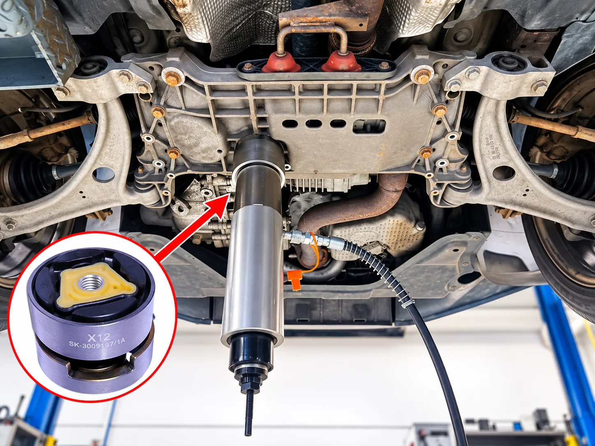
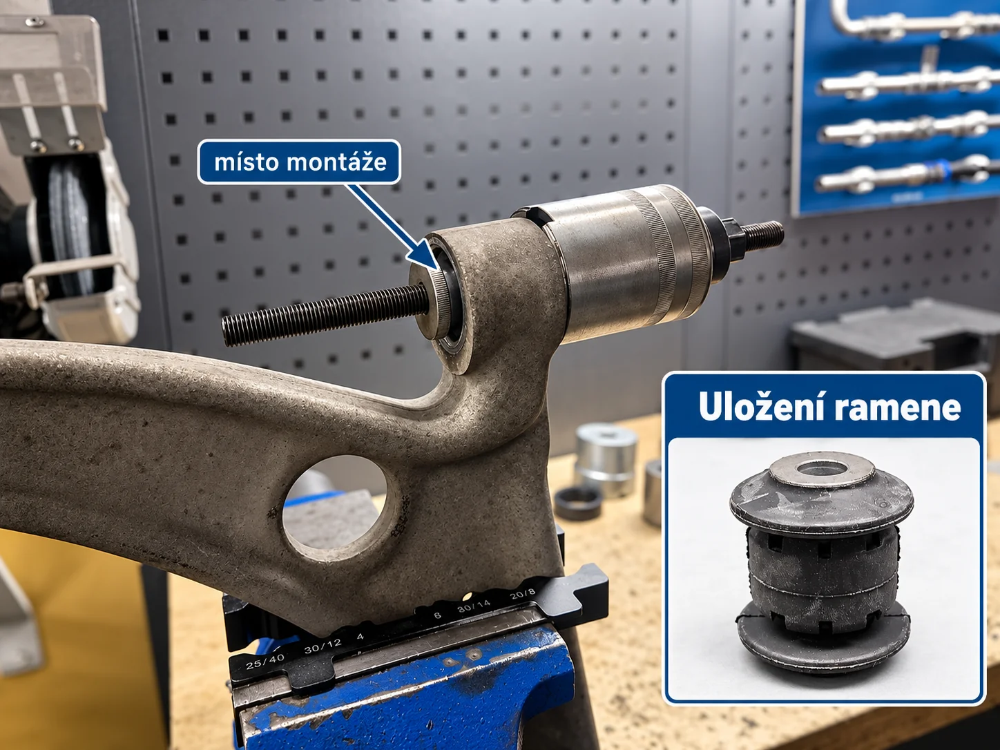

Výměna uložení nápravnice a ramen
Specializované opravy podvozku pomocí originálních servisních přípravků VAS.
V J&S servis provádíme diagnostiku a výměnu pryžokovových uložení nápravnice a ramen vozidel Volkswagen, Audi, Škoda, SEAT a CUPRA.
Opotřebená nebo poškozená uložení mohou způsobovat klepání a vibrace od podvozku, nepřesné řízení, zhoršenou stabilitu vozidla nebo nerovnoměrné opotřebení pneumatik.
Výměna bez zbytečné demontáže nápravy
Díky speciálním lisovacím přípravkům dokážeme u vybraných vozidel provést výměnu uložení přímo na vozidle, bez nutnosti kompletní demontáže nápravnice.
Tento postup umožňuje omezit rozsah demontážních prací, zkrátit dobu opravy a v některých případech také snížit celkové náklady.
Možnost tohoto způsobu výměny závisí na konstrukci vozidla, přístupnosti uložení a technologickém postupu výrobce. V případě potřeby provádíme nezbytné dílčí demontážní práce.
Originální servisní přípravky VAS
Při výměně uložení nápravnice používáme mimo jiné speciální lisovací přípravek VAS 6779 A. Pro výměnu uložení ramen využíváme odpovídající lisovací vybavení podle konstrukce konkrétního dílu.
Specializované přípravky umožňují kontrolované vylisování původního uložení a přesné zalisování nového dílu při dodržení předepsané montážní polohy, orientace a servisního postupu.
Správná montáž je zásadní pro funkci uložení, životnost opravy a bezpečné jízdní vlastnosti vozidla.
Fotografie z našeho servisu
Ukázky práce s lisovacími přípravky při výměně uložení nápravnice a ramen. Fotografie zachycují různé fáze opravy.




Kontrola geometrie po opravě
Po výměně uložení posuzujeme potřebu kontroly a seřízení geometrie podle rozsahu provedených prací a požadavků výrobce.
K měření a seřízení používáme profesionální 3D geometrii Beissbarth VAS 701 011.
Rozsah opravy a cena
Rozsah prací a cenu stanovujeme individuálně podle konkrétního vozidla, typu uložení, jeho přístupnosti a technického stavu podvozku. Případné další práce a seřízení geometrie se účtují samostatně po dohodě se zákazníkem.
Před objednáním
Vrzání, klepání nebo změna jízdního projevu samy neurčují vadný silentblok. Potřebný rozsah opravy potvrdíme kontrolou konkrétního podvozku; případné navazující měření geometrie se řídí provedeným zásahem.